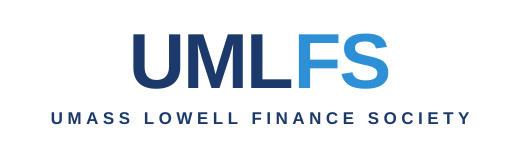
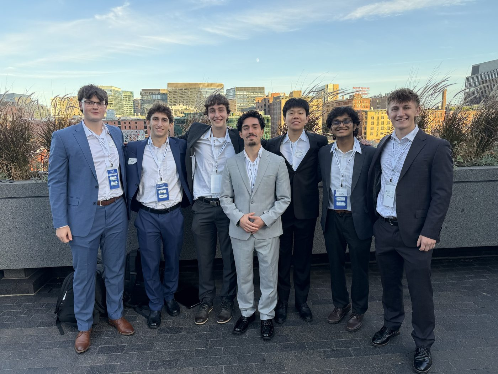
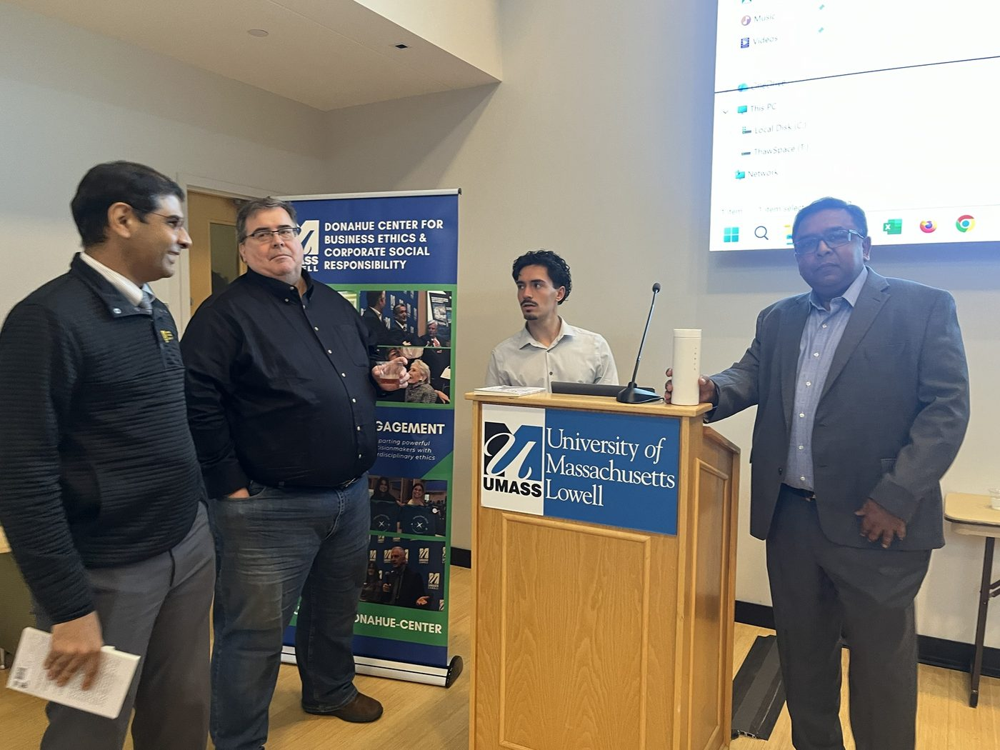

Leadership
UML Finance Society.
I lead a nine person executive board for a student finance club of over 500 members.
What changed
500 members, a nine person board, and events people show up to

I took over in April 2026. Membership is up 200+ to over 500. The e-board is nine people and each of them owns something: events, merch, partnerships, the newsletter. My job is mostly picking the people and getting out of the way.
This fall
Six events in six weeks
- September 21. From Gold to Tokens, with Professor Ravi Jain and the Donahue Center for Business Ethics. The history of money from Babylon to AI, Chipotle, open to every major.
- September 22. Boston Fintech Week at the Federal Reserve Bank of Boston. Ten of us on the opening day, with a school shuttle I got the dean's office to pay for.
- September 25. The Fintech That Thinks career summit at the Boston Fed, open to all finance students on a second bus.
- October 1. Develop Your Corporate Financial Acumen with Kim Kinsley of Pratt & Whitney, co-hosted with the DifferenceMaker Institute.
- October 28. Link Up, a LinkedIn workshop in the Bloomberg Terminal room. Free headshots, a talk on how to set up a profile, then live reviews of members' profiles on the screen. Joint with the Real Estate Club.
- Fall. The Bloomberg Global Trading Challenge, with practice time booked in the terminal room.
What I am building for after me
An analyst group the next board runs
A weekly market newsletter and a case every three weeks, run by the two youngest e-board members, not by me. Four new analysts. The top case team gets shouted out on LinkedIn. The point is to give members who want an e-board seat a way to earn one, and to make sure the club does not depend on whoever is president.
Photos
This fall so far

The group on the roof of the Federal Reserve Bank of Boston on the opening day of Boston Fintech Week, September 22. 
Another rooftop shot from Boston Fintech Week. 
Crack the Fintech Career Code, the student panel at the Boston Fed. 
With Professor Ravi Jain and the Donahue Center team before From Gold to Tokens, September 21. 
Opening the night. Babylon to blockchain in 75 minutes, with Chipotle. 
The involvement fair table in the Honors College, with the Resume Recharge and Babylon flyers.


Partnerships
Getting members in rooms they could not get into alone
Working on getting UMass Lowell into the Mass Fintech Hub so the Boston Fintech Week tickets become a yearly thing. Reaching out to CFA Society Boston to get members into their events. Lining up alumni site visits, starting with a New York trip.